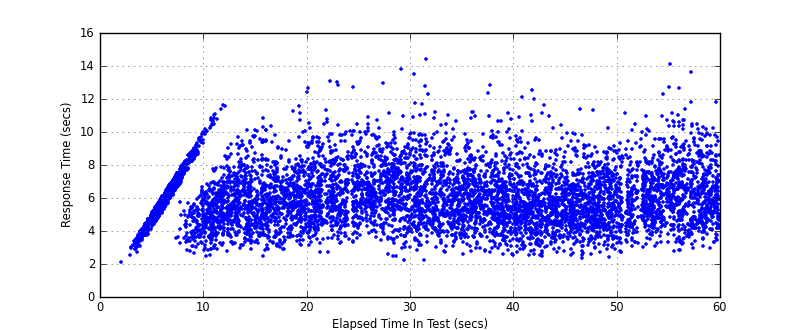

Performance Results Report
Summary
transactions: 7800
errors: 0
run time: 60 secs
rampup: 0 secs
test start: 2017-05-24 19:27:14
test finish: 2017-05-24 19:28:12
time-series interval: 5 secs
workload configuration:
| group name | threads | script name |
|---|
| user_group-21 | 30 | redis_stress.py |
| user_group-20 | 30 | redis_stress.py |
| user_group-23 | 30 | redis_stress.py |
| user_group-22 | 30 | redis_stress.py |
| user_group-25 | 30 | redis_stress.py |
| user_group-24 | 30 | redis_stress.py |
| user_group-2 | 30 | redis_stress.py |
| user_group-3 | 30 | redis_stress.py |
| user_group-1 | 30 | redis_stress.py |
| user_group-6 | 30 | redis_stress.py |
| user_group-7 | 30 | redis_stress.py |
| user_group-4 | 30 | redis_stress.py |
| user_group-5 | 30 | redis_stress.py |
| user_group-8 | 30 | redis_stress.py |
| user_group-9 | 30 | redis_stress.py |
| user_group-10 | 30 | redis_stress.py |
| user_group-11 | 30 | redis_stress.py |
| user_group-12 | 30 | redis_stress.py |
| user_group-13 | 30 | redis_stress.py |
| user_group-14 | 30 | redis_stress.py |
| user_group-15 | 30 | redis_stress.py |
| user_group-16 | 30 | redis_stress.py |
| user_group-17 | 30 | redis_stress.py |
| user_group-18 | 30 | redis_stress.py |
| user_group-19 | 30 | redis_stress.py |
All Transactions
Transaction Response Summary (secs)
| count | min | avg | 80pct | 90pct | 95pct | max | stdev |
|---|
| 7800 | 2.065 | 6.004 | 7.348 | 8.276 | 9.080 | 14.400 | 1.695 |
Interval Details (secs)
| interval | count | rate | min | avg | 80pct | 90pct | 95pct | max | stdev |
|---|
| 1 | 473 | 94.60 | 2.065 | 5.101 | 6.006 | 6.369 | 6.606 | 6.918 | 0.983 |
| 2 | 664 | 132.80 | 2.476 | 6.120 | 7.559 | 8.460 | 8.999 | 11.582 | 1.809 |
| 3 | 629 | 125.80 | 2.483 | 5.858 | 7.162 | 7.983 | 8.990 | 11.570 | 1.602 |
| 4 | 590 | 118.00 | 2.688 | 6.109 | 7.473 | 8.148 | 9.205 | 12.624 | 1.675 |
| 5 | 542 | 108.40 | 3.235 | 6.492 | 7.883 | 8.741 | 9.668 | 13.034 | 1.681 |
| 6 | 630 | 126.00 | 2.211 | 6.452 | 7.968 | 8.833 | 9.489 | 14.400 | 1.835 |
| 7 | 624 | 124.80 | 2.590 | 6.036 | 7.364 | 8.363 | 9.013 | 11.183 | 1.649 |
| 8 | 677 | 135.40 | 2.525 | 5.868 | 7.077 | 8.088 | 9.309 | 12.837 | 1.731 |
| 9 | 640 | 128.00 | 2.328 | 5.617 | 6.837 | 7.642 | 8.724 | 11.601 | 1.584 |
| 10 | 607 | 121.40 | 2.423 | 5.739 | 7.145 | 7.866 | 8.466 | 11.279 | 1.548 |
| 11 | 603 | 120.60 | 2.758 | 6.349 | 7.612 | 8.669 | 9.541 | 14.082 | 1.754 |
| 12 | 371 | 74.20 | 2.944 | 6.291 | 7.815 | 8.708 | 9.664 | 13.580 | 1.774 |
Graphs
Response Time: 5 sec time-series
Response Time: raw data (all points)

Throughput: 5 sec time-series